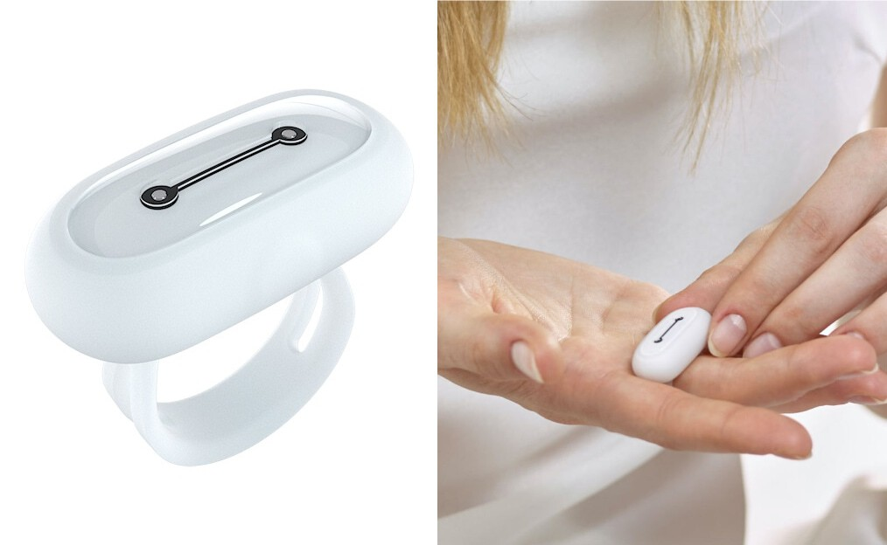

Inicio
Listas
Tabla
Galeria
Google
Productos
Registrese
Technology gadget
Te invitamos a explorar nuetra Galeria gadget:
RELOJ INTELIGENTE
ASPIRADOR INALAMBRICO

GO2SLEEP
ANILLO CNICK
GAFAS XREAL
COMPUTADORA PARA JUEGOS RAZER
ASISTENTE CON IA RABBIT
ILUMINACION PARA TECHOS SMARTER
AURICULARES AUDIO TECHNICA ATH
SILLA GAMER
BARRA DE LUCES
IMPRESORA 3D
IMPRESORA 3D
CAMARA DE ACCION IMPERMEABLE
RELOJ DESPERTADOR INTELIGENTE
BASE DE CARGA INALAMBRICA
COMPUTADORA PORTATIL ASUS
IMPRESORA FOTOGRAFICA COMPACTA
CAMARA CON DISPENSADOR DE GOLOSINAS PETCUBE
Subir


, junto con un FOV (campo de visión) de 52 grados más amplio y una nitidez de 42 píxeles por grado dentro de un paquete de titanio de 80 gramos.")


, un diseño de dispositivo tipo AirPods, controladores de alta resolución de 5,8 mm con capacidad de audio LDAC de 24 bits/96 kHz y un factor de forma compacto.")


 CAMARA DE ACCION IMPERMEABLE
CAMARA DE ACCION IMPERMEABLE  RELOJ DESPERTADOR INTELIGENTE
RELOJ DESPERTADOR INTELIGENTE BASE DE CARGA INALAMBRICA
BASE DE CARGA INALAMBRICA COMPUTADORA PORTATIL ASUS
COMPUTADORA PORTATIL ASUS  IMPRESORA FOTOGRAFICA COMPACTA
IMPRESORA FOTOGRAFICA COMPACTA CAMARA CON DISPENSADOR DE GOLOSINAS PETCUBE
CAMARA CON DISPENSADOR DE GOLOSINAS PETCUBE{kind=link}